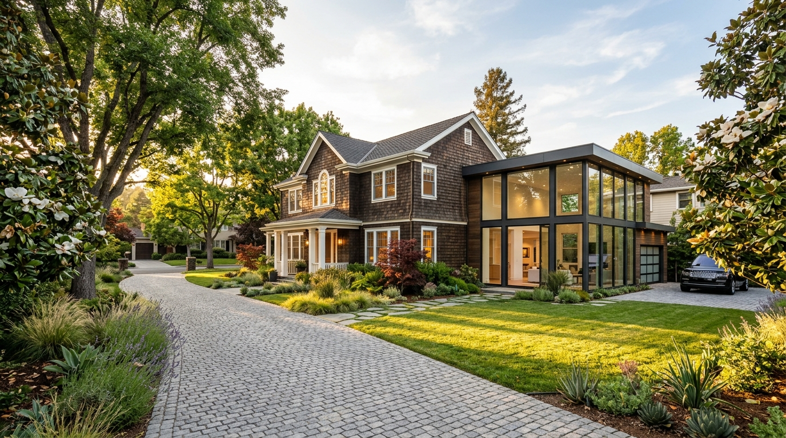

EXPLORE THE NEIGHBORHOODS


Find your corner of Palo Alto

PREMIER PRESTIGE · HISTORIC
Old Palo Alto →
Iconic tree-shaded avenues, multi-generational heritage estates, Stanford professors and tech leaders, and architectural excellence.
ESTATE PARCELS · SERENITY
Crescent Park →
Generous lots, majestic magnolias, private circular drives, and proximity to downtown University Avenue dining and shopping.
WALKABLE · DOWNTOWN LIVING
Professorville →
National historic district founded by Stanford faculty, featuring late 19th-century Queen Anne, Dutch Colonial, and Craftsman architecture.
MODERN ESTATES · EXCELLENCE
Barron Park & Green Gables →
Spacious contemporary residences, neighborhood parks with local donkeys, and pedestrian routes to world-class public schools.